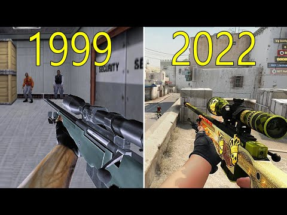

Historia de Counter-Strike: Global Offensive (CS:GO)
History of Counter-Strike: Global Offensive (CS:GO)
Counter-Strike: Global Offensive, también conocido como CS:GO, ha dejado una huella imborrable en la historia de los videojuegos y los deportes electrónicos. Desde sus modestos comienzos como un mod de Half-Life hasta convertirse en uno de los títulos más influyentes en la escena competitiva, la evolución de CS:GO ha sido fascinante.
Counter-Strike: Global Offensive, also known as CS:GO, has left an indelible mark on the history of video games and esports. From its humble beginnings as a mod for Half-Life to becoming one of the most influential titles in the competitive scene, the evolution of CS:GO has been fascinating.
A continuación, exploraremos los momentos clave en la historia de CS:GO, desde sus orígenes hasta los eventos más importantes, los cambios en el juego, y la evolución constante de mapas y armas que han mantenido a jugadores de todo el mundo enganchados durante años.
Below, we will explore key moments in the history of CS:GO, from its origins to the most significant events, game changes, and the constant evolution of maps and weapons that have kept players around the world hooked for years.
La Historia del Counter Strike
History of Counter Strike
Los orígenes de Counter-Strike:
Counter-Strike, conocido popularmente como CS, tuvo su inicio como un mod de Half-Life, desarrollado por Minh "Gooseman" Le y Jess "Cliffe" Cliffe. El mod se lanzó en 1999 y rápidamente ganó popularidad debido a su enfoque táctico, jugabilidad intensa y mecánicas únicas. La fórmula del juego, que enfrenta a equipos terroristas y antiterroristas en rondas de juego, fue innovadora y capturó la atención de la comunidad de jugadores en línea.
El éxito inicial del mod llevó al desarrollo de versiones independientes, como Counter-Strike 1.6, que se convirtieron en fenómenos en la escena de los juegos en línea. Con el tiempo, la evolución de las tecnologías y el deseo de actualizar gráficos y mecánicas llevaron al desarrollo de Counter-Strike: Global Offensive, que se lanzó en agosto de 2012.
Desarrollo de CS:GO:
CS:GO fue desarrollado por Valve Corporation y Hidden Path Entertainment. El juego buscaba mantener la esencia táctica y la jugabilidad única de las versiones anteriores, mientras se actualizaban gráficos y se introducían nuevas mecánicas. Valve se propuso modernizar el juego sin perder la esencia que lo convirtió en un clásico.
El desarrollo de CS:GO incluyó la creación de nuevos mapas, armas y modos de juego, así como la implementación de un sistema de matchmaking para facilitar las partidas equilibradas. La beta cerrada comenzó en noviembre de 2011, y el juego completo se lanzó en 2012, consolidándose rápidamente como uno de los títulos más populares en la escena de los deportes electrónicos.
Cambios Clave en CS:GO:
Desde su lanzamiento, CS:GO ha experimentado numerosas actualizaciones que han influido en la experiencia de juego. Cambios en la economía del juego, ajustes en el equilibrio de armas y la introducción de nuevas características, como el sistema de operaciones y las cajas de botín, han mantenido fresco el juego a lo largo del tiempo.
Además, actualizaciones importantes han redefinido mapas clásicos y se han añadido otros nuevos. La continua atención de Valve a los comentarios de la comunidad ha contribuido a la evolución positiva del juego, equilibrando la competitividad y la diversión casual.
Eventos Importantes:
La escena competitiva de CS:GO ha estado marcada por eventos significativos que han elevado el juego a la cima de los deportes electrónicos. Torneos emblemáticos como el Intel Extreme Masters (IEM), ESL One, DreamHack Masters y, especialmente, el Major Championship Series, han atraído a equipos de todo el mundo y millones de espectadores.
Momentos históricos, como las legendarias actuaciones de equipos como Fnatic, NiP, Virtus.pro y Astralis, han contribuido a la rica historia competitiva del juego. Las jugadas icónicas, como las de s1mple, device y coldzera, han quedado grabadas en la memoria de los aficionados.
Evolución de Mapas y Armas:
Los mapas y armas son elementos fundamentales de CS:GO, y su evolución ha sido constante. Clásicos como Dust II, Mirage e Inferno han experimentado actualizaciones gráficas y de diseño para adaptarse a los cambios en las estrategias de juego. La inclusión de nuevos mapas, como Overpass y Cache, ha añadido variedad y desafíos tácticos.
En cuanto a las armas, el juego ha visto ajustes en el equilibrio para fomentar la diversidad en las elecciones tácticas. La introducción de nuevas armas y la revisión de estadísticas han mantenido a los jugadores en constante adaptación y exploración de estrategias. La mecánica de las armas sigue siendo uno de los puntos más esenciales para el éxito en el juego.
Origins of Counter-Strike:
Counter-Strike, commonly known as CS, had its start as a mod for Half-Life, developed by Minh "Gooseman" Le and Jess "Cliffe" Cliffe. The mod was released in 1999 and quickly gained popularity due to its tactical focus, intense gameplay, and unique mechanics. The game's formula, which pits terrorist and counter-terrorist teams in rounds of play, was innovative and captured the attention of the online gaming community.
The initial success of the mod led to the development of standalone versions, such as Counter-Strike 1.6, which became phenomena in the online gaming scene. Over time, the evolution of technologies and the desire to update graphics and mechanics led to the development of Counter-Strike: Global Offensive, released in August 2012.
Development of CS:GO:
CS:GO was developed by Valve Corporation and Hidden Path Entertainment. The game aimed to maintain the tactical essence and unique gameplay of previous versions while updating graphics and introducing new mechanics. Valve set out to modernize the game without losing the essence that made it a classic.
The development of CS:GO included the creation of new maps, weapons, and game modes, as well as the implementation of a matchmaking system to facilitate balanced matches. The closed beta began in November 2011, and the full game was released in 2012, quickly establishing itself as one of the most popular titles in the esports scene.
Key Changes in CS:GO:
Since its release, CS:GO has undergone numerous updates that have influenced the gaming experience. Changes in the game's economy, adjustments to weapon balance, and the introduction of new features such as the operation system and loot boxes have kept the game fresh over time.
Furthermore, significant updates have redefined classic maps, and new ones have been added. Valve's continued attention to community feedback has contributed to the positive evolution of the game, balancing competitiveness and casual fun.
Major Events:
The competitive CS:GO scene has been marked by significant events that have elevated the game to the pinnacle of esports. Iconic tournaments like the Intel Extreme Masters (IEM), ESL One, DreamHack Masters, and especially the Major Championship Series, have attracted teams from around the world and millions of viewers.
Historical moments, such as the legendary performances of teams like Fnatic, NiP, Virtus.pro, and Astralis, have contributed to the rich competitive history of the game. Iconic plays, such as those from s1mple, device, and coldzera, have been etched into the memories of fans.
Evolution of Maps and Weapons:
Maps and weapons are fundamental elements of CS:GO, and their evolution has been constant. Classics like Dust II, Mirage, and Inferno have undergone graphical and design updates to adapt to changes in gameplay strategies. The inclusion of new maps, such as Overpass and Cache, has added variety and tactical challenges.
Regarding weapons, the game has seen balance adjustments to encourage diversity in tactical choices. The introduction of new weapons and the revision of statistics have kept players in constant adaptation and exploration of strategies. Weapon mechanics remain one of the most essential aspects for success in the game.